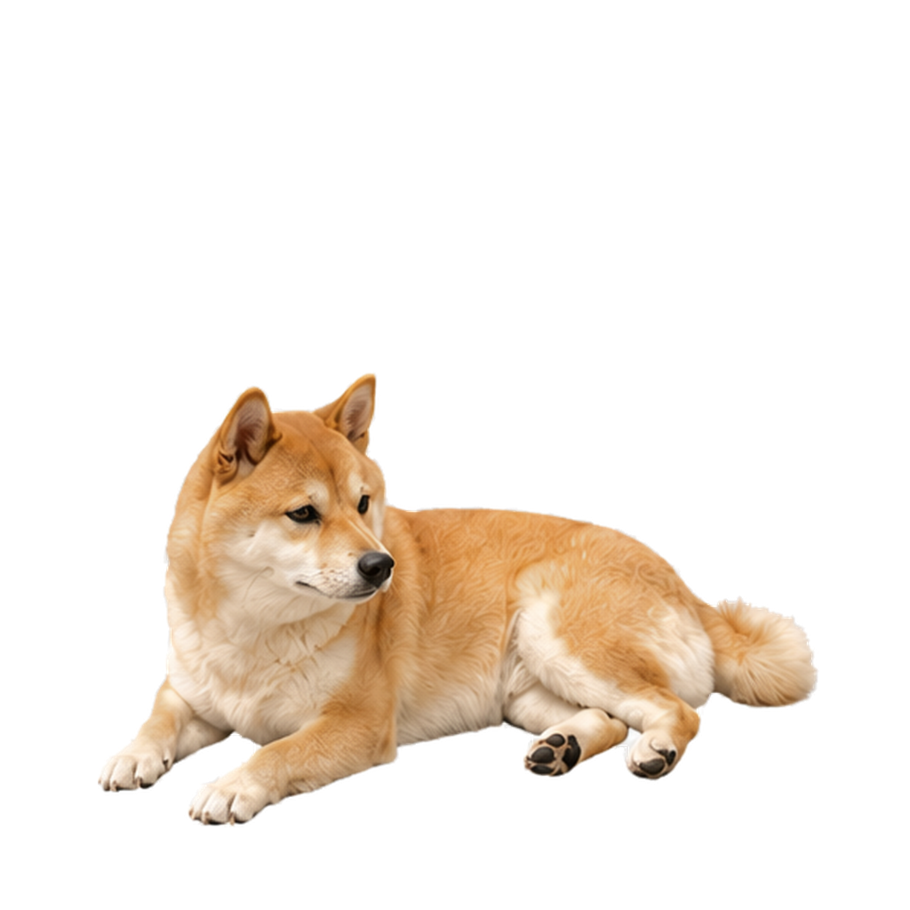
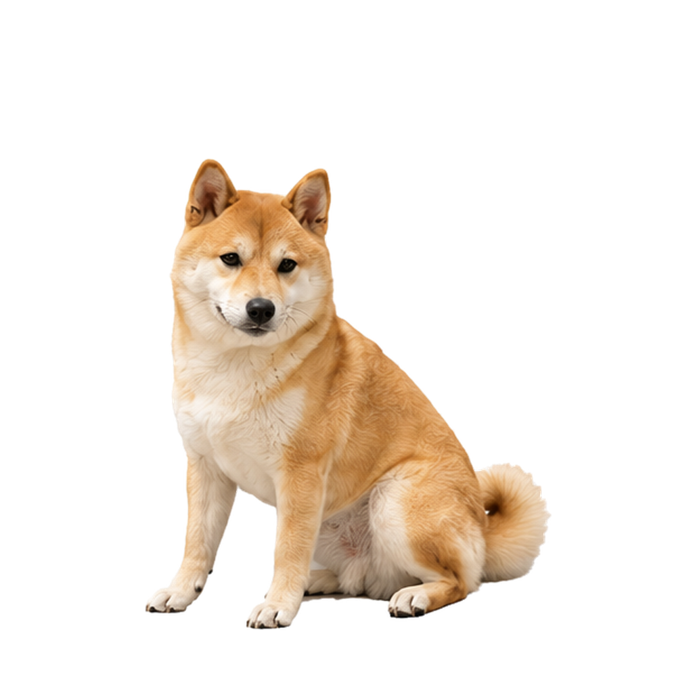
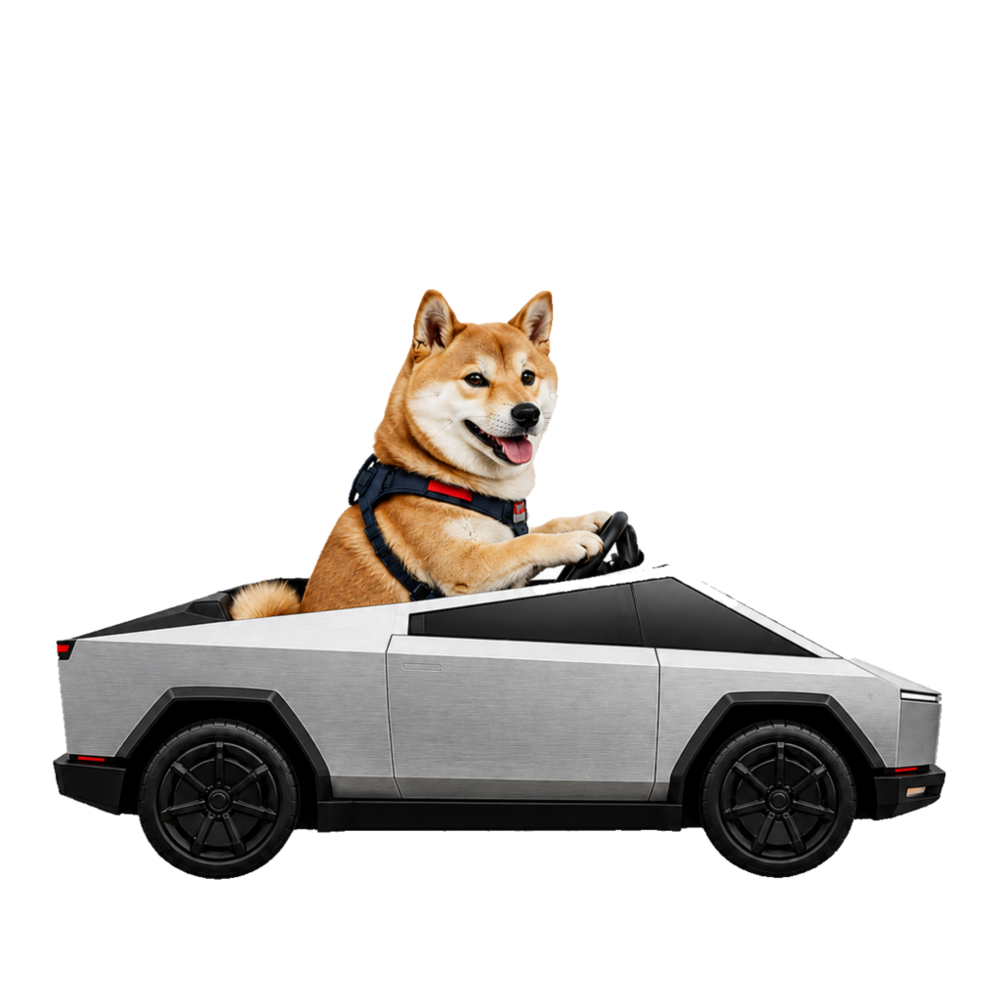
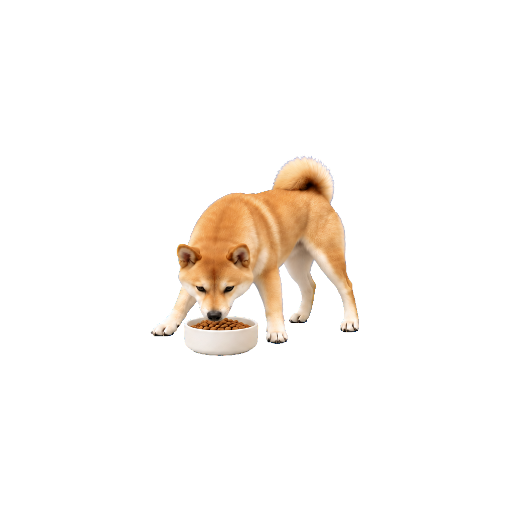
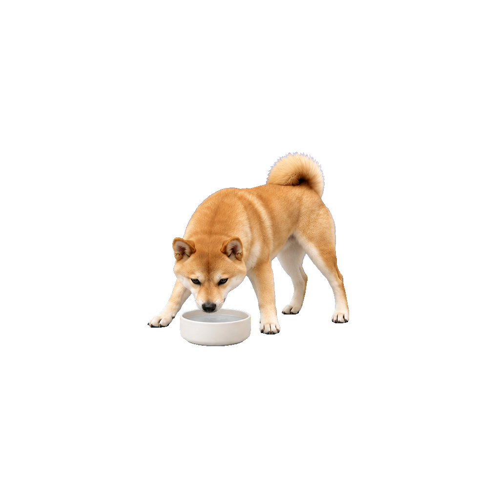
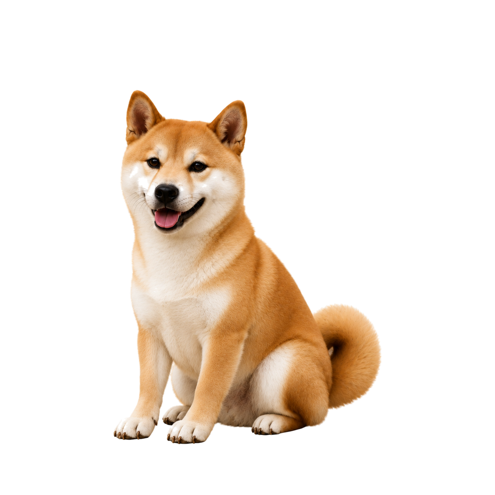
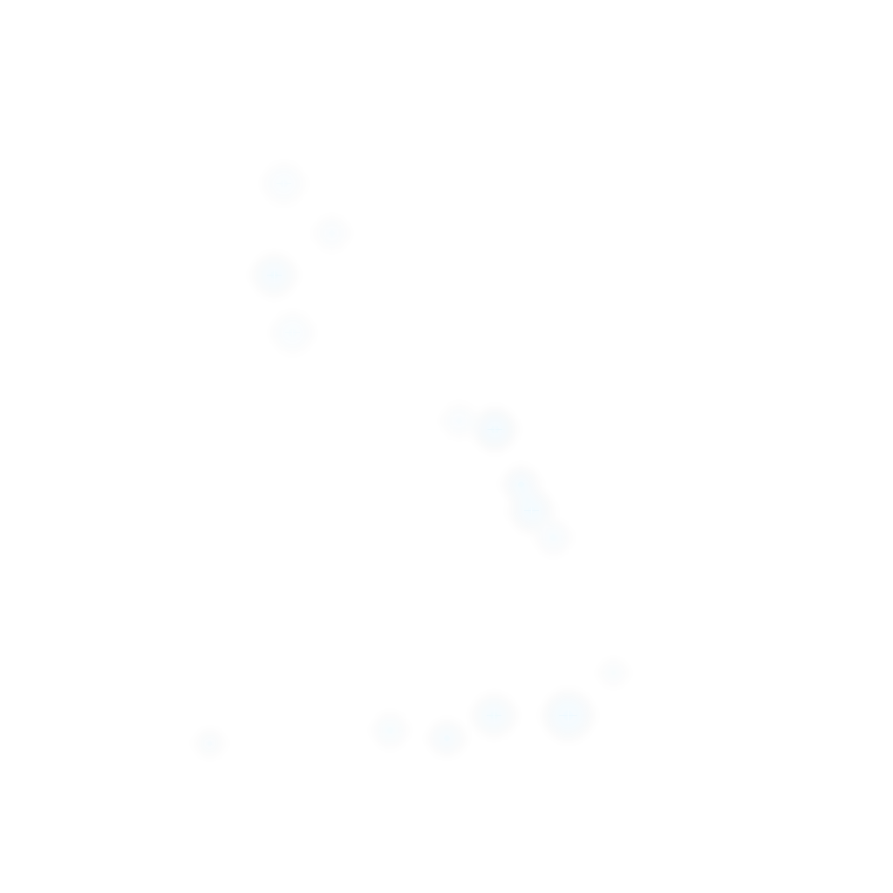

悟空现在
正在安静休息
刚巡视过房间，现在愿意陪你一会儿，但更想趴着。
心情不错
趴着
愿意互动
查看状态详情
精力64
心情78
社交需要42
压力18
看看悟空现在的状态，选择合适的互动。

悟空现在
刚巡视过房间，现在愿意陪你一会儿，但更想趴着。
根据趴姿和当前状态给出的操作
悟空正在喝水，喝完再陪你。你也可以点“停下”。
真实发生过的动作和互动
沿桌面走了走，回到了熟悉的位置。
因为听到附近有动静。
心情上升，社交需要降低。
稳定身份信息，不与实时心情混在一起
提供给对话上下文的稳定事实
只保存陪伴所需的信息
决定悟空何时适合主动靠近
影响动作偏好和表达，不绕过安全门禁
缓慢变化，不由一次互动大幅改写
这些内容可被对话检索，但不会直接触发动画
旅行、第一次洗澡、掉进坑里等长期事件。
喜欢的食物、散步时段和常去地点。
有限数量的触摸、对话和动作结果。
只读取已经保存文字描述的照片。
跟随 EXE 的可携带文件
绑定照片来源，描述与相册关系保存在可携带数据目录
以相册浏览为主，三列显示更多内容
单图快速检查
只管理文本生成，不允许模型直接选择素材
仅测试当前模型连接
控制回答前允许读取的记忆范围
检查不同记忆开关的检索结果
保存后重新注入下一次模型请求
只使用当前未保存的设定副本
稳定趴姿下的低频呼吸和轻微眨眼。

稳定坐姿待机，适合观察主人和等待互动。

主人手动邀请后，在安全工作区内驾驶和转向。
缺少完整行走与窗口位移闭环，暂不提供执行入口。

从站姿低头进食，吃完后安全回到站立。

站姿进入喝水循环，完成后恢复稳定姿态。
听到主人指令后，从兼容姿态过渡到稳定坐姿。

主人明确触发的魔法演出，不进入自主行为。

缓慢消失后移动到安全位置，再以魔法形态出现。
后续按节日独立审批，不与日常素材混用。
普通页面隐藏的技术信息统一在这里展开
固定输入与种子产生确定结果
| 候选 | 分数 | 状态 | 原因 |
|---|---|---|---|
wk.idle.prone | 84 | posture_match, comfort | |
wk.observe.head_turn | 69 | curiosity, cooldown_ok | |
wk.command.spin | Gate | command_only | |
wk.magic.accio_broom | Gate | owner_only |
请求、门禁、生命周期和恢复结果